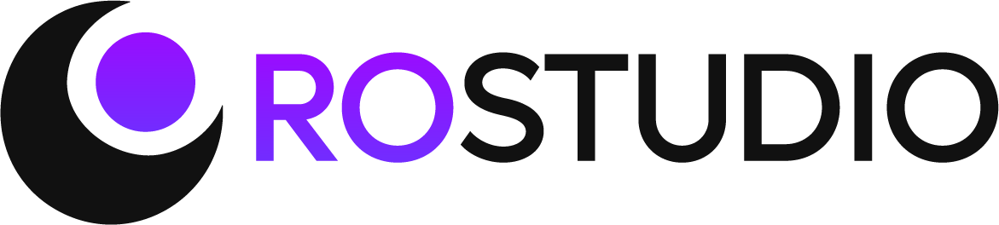

Code
Syntax written with the whole project in view and delivered into Roblox Studio.
ShippedStudent-led project

RoStudio is working toward a platform where tuned agents build and integrate multiple parts of game development within one shared workflow.
Games provide a demanding test for multimodal AI: code, models, animation, sound, effects, interfaces, and networking behavior must all agree. Solving that coordination problem can help establish a broader foundation for multimodal and agent-based systems.
RoStudio was founded and is led by UGA student Sadiq Rasheed, with Tianming Liu, director of the UGA LLM Lab, serving as faculty advisor.
Generating one asset was never the hard part. The hard part is coordinating many. A sword can involve a model, texture, animation, sound, damage rule, and network boundary - six outputs that only count as finished when they agree with one another.
Game development makes that limitation especially visible. RoStudio uses it as a practical environment for exploring how specialized AI capabilities can share context and contribute to one evolving system.
The platform
Each capability is developed around the same project context so its output can fit the systems that already exist.
Syntax written with the whole project in view and delivered into Roblox Studio.
ShippedRigs and motion developed against the gameplay code that will drive them.
In developmentGeometry built to fit its system rather than exported as an isolated asset.
In developmentEffects coordinated with animation, sound, and the gameplay events that trigger them.
In developmentGet involved
RoStudio welcomes students and builders interested in coordinating AI, software, and creative production for real game-development workflows.